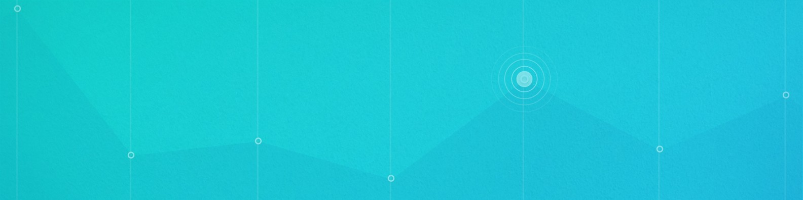

Nuestra plataforma virtual utiliza los conceptos de gamificacion y los lleva a nuevos niveles de innovación, aquí usted podrá tener el control absoluto para poder ejercer su labor como docente e interactuar mediante procedimientos gamificados de aprendizaje, ahora la enseñanza de un docente o tutor no tendrá limites ya que DPC-Quiz ofrece 2 métodos distintos pero que al final se vinculan para ofrecer una educación de calidad, nuestros cuestionarios cuentan con un desarrollo inteligente e infinito para que cada docente pueda agregar la cantidad de preguntas necesarias conectadas a cualquier tema.
Posterior a eso tiene una herramienta de mapas mentales en el cual el docente puede fácilmente crear una infinidad de plantillas, adaptando el croquis del diseño que requiera la asignación, todo para afianzar el conocimiento del estudiante y poder tener un segundo método de aprendizaje relevante y divertido. El docente podrá guardar, cargar, compartir y eliminar mapas mentales, haciendo de estos muy fáciles de utilizar o visualizar en tiempo real.
¿Problemas con los cuestionarios de nuestra plataforma? Puedes descargarte un Manual ilustrativo para guiarte o bien puedes contactarte con los administradores de la página para argumentar todas tus dudas…
¿Cuáles son nuestras ventajas?
Otra pregunta que recorre las mentes de nuestros nuevos usuarios es… “¿que ventajas me ofrece esta plataforma?” para simplificar esto hemos hecho una lista resaltando algunas de nuestras múltiples ventajas:
- Personalización sencilla e interactiva
- Aprendizaje rápido y altamente grafico
- Interfaz simple pero concisa
- Cuestionarios completos y adaptables a todo tema
- Ranking competitivo y atractivo para estudiantes
- Plataforma accesible para nuevos usuarios
- Mapas mentales increíblemente personalizables
- Gamificacion de calidad

¿Qué tiene de especial esta plataforma?
Sabemos que la primera pregunta que se le cruza por la mente es “¿Qué de especial tiene esta plataforma para ofrecerme?”, bien, permítanos responder esa duda a través de las funcionalidades que ofrece DPC-Quiz. Con unos sencillos pasos usted como docente será capaz de acceder a las múltiples opciones de personalización para hacer de tu cuestionario lo mas entendible y robusto posible, tendrás a tu disposición un método de acceso que es tan sencillo como solo ingresar con tu cuenta de google para posteriormente seleccionar la ocupación que ejerce (docente o estudiante) y por supuesto, una interfaz amigable con nuevos y veteranos usuarios. ¿Qué esperas para descubrir lo fácil que es aprender o enseñar en esta plataforma?